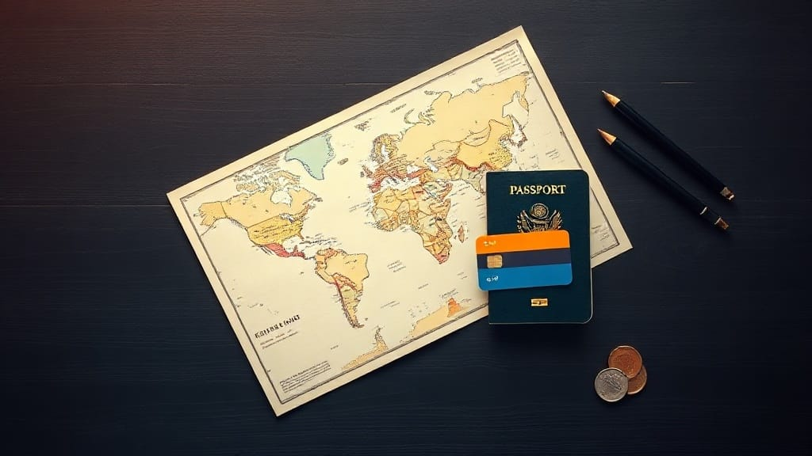

How to Open a Bank Account in Another Country
Opening a bank account in another country in 2026: the documents you need, when to pick Wise vs a local bank, and the FBAR rules US expats cannot skip.
Z Zar · 22 Jun 2026 · 3 min read

FIRE Guide · Expat Finance · full guide →
Opening a bank account in another country used to mean a plane ticket, a folder of notarized documents, and a polite argument with a branch manager who had never met a foreigner before. In 2026 it is mostly a phone app and a photo of your passport, but the rules underneath have not relaxed, and for Americans they have quietly gotten stricter. Here is how it actually works, what you will need, and how to avoid the two mistakes that cost expats the most.
| Option | Best for | Open from abroad? | FX cost |
|---|---|---|---|
| Wise | International transfers, holding many currencies | Yes, before you arrive | ~0.4–0.7% |
| Revolut | Frequent travel across Europe | Often needs local address | 0% weekdays, markup weekends |
| N26 | A first everyday account after you land | Sometimes, varies by nationality | 1.7% (free on paid plans) |
| Local bank | Rent, utilities, salary, a real local IBAN | Usually in person | Varies |
The paperwork
What you actually need to open a foreign account
Almost every country runs the same checklist, because they are all enforcing the same two global rules: anti-money-laundering (AML) and know-your-customer (KYC). Strip away the local quirks and you will be asked for a valid passport or national ID, proof of address (a utility bill or a lease usually does it), and proof of where your money comes from. Some countries add a work visa, a residence permit, or a local tax identification number on top.
The tax number is the step that surprises people. In much of Europe the bank cannot finish your application until you have registered your address with the local authority and received a tax ID — which means your "open in five minutes" neobank may quietly stall until you have done the in-person registration first. The order matters: address registration, then tax number, then the account.
The smart setup
Neobank or local bank? Usually both
The cleanest strategy most expats land on is to run two accounts in parallel. A borderless fintech account handles the money that moves across currencies, and a local account handles the money that lives in one place. Wise is the most accessible of the fintechs: you can apply before you even arrive with just a passport, it shows the exact exchange rate plus a transparent fee, and it has the fewest account-freezing horror stories. Revolut is excellent if you cross borders often, though it typically wants a local address first. N26 works well as a first everyday account once you have landed, but its standard plan charges 1.7% on currency conversion, so it is not where you want to move large sums.
What none of them fully replaces is a local bank. The moment a landlord, a utility company, or a government office insists on a local IBAN, a Belgian, Lithuanian, or German fintech IBAN can get rejected, a frustration expats call IBAN discrimination. Think of the fintech as your wallet and the local bank as your address. The same "open it, then use it deliberately" logic applies to a no-fee checking account back home, and to opening a brokerage account: the account is easy; using the right one is the skill.
If you are American
The reporting rules Americans cannot ignore
If you are a U.S. citizen or green-card holder, a foreign account comes with homework that has nothing to do with the foreign bank. Two separate U.S. systems watch it, run by two different agencies, and filing one does not satisfy the other. The first is the FBAR (FinCEN Form 114): if the combined value of all your foreign accounts tops $10,000 at any single moment during the year — even for one day — you must report them. That threshold does not change whether you live in Madrid or Miami.
The second is FATCA (IRS Form 8938), which kicks in at higher levels: roughly $200,000 in foreign financial assets at year-end if you live abroad and file single, or $50,000 if you live in the U.S. The penalties for ignoring this are not symbolic: a non-willful FBAR miss runs up to about $16,500 per report in 2026, and a willful one can reach the greater of roughly $165,000 or half the account balance. The accounts are legal and easy to open; the silence is what gets punished. If you are building wealth across borders, pair this with genuinely global diversification rather than scattering cash in accounts you then forget to report.
If you have opened an account abroad, tell us which route worked — drop it in the comments or reply to the email. The local quirks are where the real lessons hide.
The bottom line
Opening a bank account in another country is no longer the hard part — the app will have you done in an afternoon. The skill is choosing the right mix (a borderless account for movement, a local account for roots), getting the order right (address, tax number, then account), and, if you are American, treating the FBAR and FATCA filings as non-negotiable. Do those three things and your money crosses borders as easily as you do.